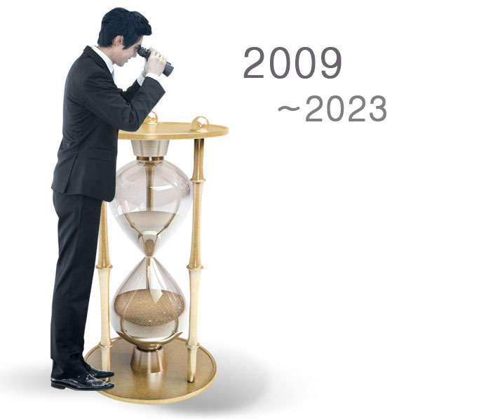

회사소개
회사연혁

- 2009. 07. 28 ㈜조은기술단 법인 설립 (남양주 법인)
- 2011. 04. 13 “㈜제이이엔지니어링”으로 상호 변경
- 2015. 07. 24 “제이이소방주식회사”로 본점이전 및 상호변경
- 2015. 09. 03 소방시설관리업 변경등록 (경기수원 제 2015-7호)
- 2015. 09. 18 전문소방시설공사업등록 2015-02-00204
- 2021. 07. 30 “제이(J)소방(주)”로 본점이전 및 상호변경
- 2021. 10. 29 "조원1동행정복지센터" "조원1동지역사회보장협의체" "예비사회적기업 제이소방㈜" 지역사회내 저소득층 지원강화로 지역 주민의 삶의 질 향상에 기여하는 업무협약서 체결
- 2021. 12. 13 수원시지역아동센터연합회 "예비사회적기업 제이소방㈜" 수원시 관할 지역내 지역아동센터의 화재예방 환경 조성을 위한 서비스 지원목적 업무협약서 체결
- 2022. 02. 22 "노을빛장애인주간보호센터" "제이소방㈜" 장애인 보호센터 소방안전점검 실시 업무 협약서 체결
- 2022. 09. 16 사회적기업 인증 - 고용노동부 장관
- 2023. 03. 02 "수원시-제이소방㈜" 업무협약 체결
- 2023. 07. 05 더 든든 재가복지센터 지정 신청